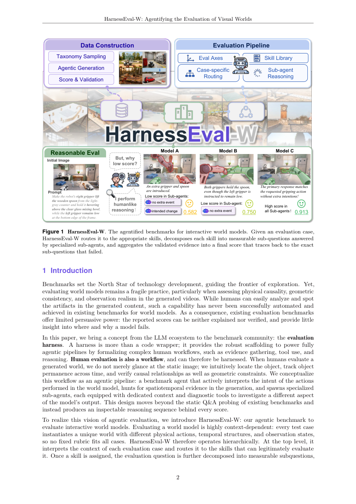

#1
★ 7/10
HarnessEval-W: Agentifying the Evaluation of Visual Worlds
HarnessEval-W：将智能体化评估引入视觉世界模型

图 Figure · Page 2 of paper
🎯 用AI智能体像人类一样有理有据地评估世界模型
An AI agent pipeline that evaluates world models with transparent, human-like reasoning instead of blind numeric scores.
🗣️ 一句话比喻 · Plain-English Analogy就像把餐厅评价从"一颗星"升级为米其林评审员的详细点评——不只告诉你"不好吃"，还解释"汤太咸、牛排过熟、摆盘凌乱"。HarnessEval-W就是这样一位有理有据的AI评审员，专门点评AI生成的视频场景。Think of it like switching from a restaurant getting a single star rating on an app to having a professional food critic write a detailed review — explaining exactly why the soup was too salty and the steak overcooked. HarnessEval-W is that detailed critic, but for AI video simulations.
| 维度 | 中文 | English |
|---|---|---|
| ❓ 待解决 的问题 |
AI世界模型（比如能生成视频或模拟物理场景的系统）需要被评估：它生成的内容符合物理规律吗？因果关系对吗？但现有的评估工具只会给一个数字分数，没有任何解释——就像老师只写"60分"却不告诉你哪里错了。这让研究者无法知道模型哪里出了问题，也无法信任这个分数。 | When AI systems generate videos or simulate how the world works (called "world models"), we need to judge whether the output is realistic — does physics make sense, do causes lead to correct effects? Right now, evaluation tools just spit out a single number with no explanation, like a teacher marking your essay "6/10" without any comments. Nobody can tell what went wrong or why. This makes it impossible to trust or improve these models systematically. |
| 💡 解决 的亮点 |
• 提出"智能体化评估"：不用固定公式，而是让AI智能体理解每个评估案例，分解问题，派遣专门的子智能体逐一核查。 • 每次评估都生成一棵透明的"证据树"，完整推理链可供人类阅读和验证，不再是不可解释的黑箱分数。 • 在18个世界模型、330个测试案例上进行验证，评估结果与人类专家偏好高度一致。 • 全部代码开源，作为持续演进的基准，欢迎社区贡献新技能和新测试案例。 | • Introduces "agentified evaluation": instead of a fixed formula, an AI agent reads each case, breaks it into sub-questions, and assigns specialist sub-agents to investigate each one. • Every evaluation produces a transparent "evidence tree" — a full reasoning chain you can read and verify, not just a black-box score. • Applied to 18 different world models across 330 test cases, with judgments that closely match human expert opinions. • Fully open-sourced as a living benchmark that the community can expand over time. |
| 🧪 实验 内容 |
研究者将HarnessEval-W应用于18个代表性世界模型，涵盖330个精心设计的评估案例。他们将流水线的判断与人类偏好标注进行对比，衡量一致性。基线方法是现有的只输出数字分数、没有推理的自动评估指标。评估维度包括生成内容的物理合理性、因果一致性和世界状态正确性。 | The researchers applied HarnessEval-W to 18 representative world models (covering various architectures and generation paradigms) across 330 carefully designed evaluation cases. They compared the pipeline's judgments against human preference annotations to measure alignment. Baselines included existing automatic metrics that output scalar scores without reasoning. The evaluation covered aspects like physical plausibility, causal consistency, and world-state correctness in generated rollouts. |
| 📊 实验 结果 |
HarnessEval-W在330个评估案例、18个世界模型上的判断结果与人类偏好高度一致。流水线为每个生成的视频片段提供可验证、细粒度的诊断报告。相比只输出单一数字的传统指标，该系统在可解释性和诊断丰富度上有显著提升。论文在18个模型上报告了具体的一致性分数和各维度表现。 | HarnessEval-W's judgments closely align with human preferences across all 330 evaluation cases and 18 world models tested. The pipeline provides verifiable, fine-grained diagnoses for every generated rollout. While the paper focuses on qualitative alignment with human reasoning rather than reporting a single aggregate percentage improvement, the system demonstrably outperforms brute-force scalar metrics in interpretability and diagnostic richness. Specific agreement rates and per-dimension scores are reported across the 18 models in the benchmark. |
| 🏁 结论 | HarnessEval-W证明了世界模型的评估可以超越不透明的数字分数——智能体化的流水线能为每次判断提供透明、与人类一致且可验证的推理过程，为评估能模拟物理世界的AI系统树立了新的可信标准。 | HarnessEval-W proves that world model evaluation can go beyond opaque numeric scores — an agentified pipeline can produce transparent, human-aligned, and verifiable reasoning for every judgment. This establishes a new, trustworthy standard for benchmarking AI systems that simulate the physical world. |
| 🔗 论文 链接 |
arXiv: 2608.16859v1 · 📥 PDF | |
⚙️ Method · 方法详解
HarnessEval-W像一个聪明的调查小组。当拿到一个世界模型的输出（比如一段生成的视频）时，"父智能体"先读懂上下文，判断需要检查哪些问题（比如"球落地速度对吗？"或"转动门把手后门会开吗？"）。然后它派出多个专门的"子智能体"，每个子智能体配备合适的工具，专门负责调查一个子问题。子智能体收集证据后汇报给父智能体，父智能体综合所有证据，给出最终判断，并附上完整的推理过程。整个过程就像人类专家评审：分工调查，汇总论证，得出结论。
HarnessEval-W works like a smart investigative team. When given a world model's output (e.g., a generated video), a "parent" AI agent reads the context and figures out what needs to be checked — like "does the ball fall at the right speed?" or "does the door open after the handle is turned?". It then spawns specialized "child" agents, each equipped with the right tools and context to investigate one specific sub-question. Each child agent gathers evidence and reports back. Finally, the parent agent reviews all the evidence, checks for consistency, and issues a final verdict with a complete explanation — a full chain of reasoning, not just a score. This mirrors how a human expert reviewer would approach the task: divide, investigate, synthesize.
🌟 Why It Matters · 为什么重要
随着AI系统越来越多地用于模拟物理世界（如机器人、自动驾驶、游戏引擎），我们迫切需要真正可信、可理解的评估工具。HarnessEval-W的透明推理链让开发者能精准定位世界模型的错误所在，从而加速更安全、更可靠的AI开发。
As AI systems increasingly simulate real-world physics for robotics, autonomous driving, and game engines, we urgently need evaluation tools we can actually trust and understand. HarnessEval-W's transparent reasoning chains mean developers can pinpoint exactly what a world model gets wrong — accelerating safer and more reliable AI development.